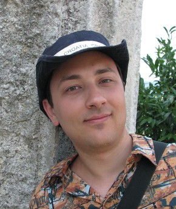

|  | |
Контакты | |
| Тел. | +7 905 547 11 98 |
| Skype | cblp.su |
| Эл. почта | cblp@cblp.su |
| Telegram | cblp_su |
| Сайт | cblp.su |
| GitHub | cblp |
| Bitbucket | cblp |
| linkedin.com/in/cblpsu | |
| fb.me/cblp.su | |
| cblp_su | |
| январь 2015 — н. в. (1 семестр) | преподаватель функционального программирования (Haskell) Московский Химический Лицей (школа 1303), Москва |
| сентябрь 2012 — н. в. (3 года) | руководитель научных работ школьников Московский Химический Лицей (школа 1303), Москва |
| декабрь 2011 — н. в. (4 года) | разработчик Яндекс, Москва I'm a backend developer of the keyword statistics service Wordstat.yandex.com and several internal Yandex services. My software successfully stands year-to-year growing data and user traffic. |
| ноябрь 2006 — октябрь 2011 (5 лет) | engineer Research Institute of Information Technologies, Москва I was the lead developer of multi-component software system. I've been working on design and code, program and user documentation, deploy and customer support. In my team, I introduced usage of source control tools, issue management, common knowledge system (wiki). |
| grad. 2010 | The Moscow Institute of Humanities and Economics, faculty of law | higher/specialist in jurisprudence, civil law |
| grad. 2006 | Institute of Cryptography, Communications and Informatics, faculty of information security | incomplete higher in computer security |
| grad. 2002 | Московский Химический Лицей (школа 1303), faculty of physics and mathematics | secondary |
| июнь 2015 | Organized Haskell meetup/conference in Moscow, Russia: 6 talks, 50+ attendees (schedule in Russian: github.com/ruHaskell/ruhaskell/wiki/Meetup2015Summer). Gave a talk “Haskell for pythonists” there. |
Moscow, Russia.
Ready to relocate.